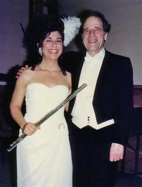
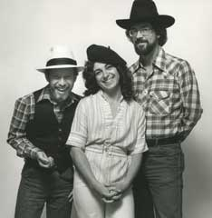

Critical Reviews
Ms. Weiss has received numerous outstanding reviews for her work in:
- Concerto Performances
- Orchestral Incidental Solos as Princepal Flutist with the Oregon Symphony
- Chamber Music and Recital Performances
- Recordings
Concerto Performances
Nielsen "Concerto for Flute and Orchestra" with the Vancouver Symphony, Salvador Brotons, Conductor
Her years of skill were immediately obvious in the delicate, nuanced fluidity of her playing. She made the extremely difficult flute solo, marked by numerous dizzying cadenzas, come off sounding effortless and smooth, the mark of a great soloist. She used the flute's lower registers brilliantly, delivering a deliciously husky timbre when playing down low.
Lorin Wilkerson, Northwest Reverb. January 18, 2009Nielsen "Concerto for Flute and Orchestra" with the Vancouver Symphony, Salvador Brotons, Conductor
Weiss used a nice palate of colors to make her passages inviting and engaging. The conversation was often congenial yet darting as Weiss deftly handled passages that scampered about. She also phrased the brief lyrical themes with grace and kept the mood playful and vivid.
James Bash, The Columbian. January 17, 2009Mozart "Concerto for Flute and Harp" with the Oregon Mozart Players, Ching-Hsin Hsu, Conductor
Guest artists Dawn Weiss and Jennifer Craig are principal flute and harp for the Oregon Symphony and they grabbed the Concerto for Flute, Harp and Orchestra by the ears and ran with it. ...Weiss is an assured and tasteful flutist, playing the solo lines with immense art and craft - she seemed to enjoy every minute...both played with confidence and some wonderful nuances, in good balance with the orchestra. Overall, a charming performance of a familiar beloved work.
Karen Kammerer, The Register-Guard, Eugene, OR. November 24, 1993Lukas Foss "Renaissance Concerto", Lukas Foss, Conductor
 Dawn Weiss with composer/conductor Lukas Foss
Weiss...deftly handled the work's swirling phrases and unusual techniques. In the end she walked off stage still playing as the orchestra faded to a whisper behind her. It was a wonderful close to a stylish performance.
Kip Richardson, The Oregonian. April 18, 1993C.P.E.Bach "Concerto in d minor" with the Colors of the Baroque Orchestra, Nick Norton, Conductor
Her performance was imaginative, polished and memorable. We hope she will soon return.
Karen Perkins, President of the Utah Flute Association, in UFA's Newsletter, "Flute Facts", November 20, 1992Bach "Brandenburg Concerto #5" with the Oregon Symphony
The concert began with a mere 14 players and J. S. Bach's Brandenburg Concerto No. 5...The soloists did a fine job.
David Stabler, The Oregonian, February 8, 1988Mozart "Flute and Harp Concerto" with the Oregon Symphony Orchestra, James DePreist, Conductor
Soloists Dawn Weiss on flute and Harpist Jennifer Craig gave a skillfully prepared, nicely shaded account of the (Mozart Flute and Harp) concerto. Their sensitive interaction was heard best in the duet cadenzas of the score.
Robert Lindstrom, The Oregonian, October 14, 1985"The Fourth Brandenburg found flutists James Walker and Dawn Weiss complimentary colleagues providing the required amounts of rhythmic spring and poise."
...Chamber Music Northwest
The OregonianBach "Brandenburg Concerto #4" with Chamber Music Northwest, performed without a conductor
The fourth Brandenburg found flutists James Walker and Dawn Weiss complimentary colleagues providing the required amounts of rhythmic spring and poise.
Robert Lindstrom, The Oregonian, July 7, 1985Chaminade "Concertino" with the Oregon Symphony Pops Orchestra, Keith Brion, Conductor
Two members of the orchestra effectively stepped forward in vintage bits of virtuosity...and flutist Dawn Weiss in Cecile Chaminade's Concertino in D Major.
Robert Lindstrom, The Oregonian, April 18, 1983Mozart "Flute Concerto in G Major" with the Oregon Symphony Orchestra, James DePreist, Conductor
Flutist's solo caps concerts...Oregon Symphony Principal Flutist Dawn Weiss stepped out of the ranks Sunday to perform as soloist in Mozart's flute concerto (in G Major), a work she has been playing with the orchestra during a state tour this month. Miss Weiss...settled into the kind of responsible phrasing and musicianship that she has exhibited all season from her regular seat in the orchestra.
Robert Lindstrom, The Oregonian, May 25, 1981Mozart "Flute Concerto in G Major", with the Oregon Symphony on tour, James DePreist, Conductor
The concerto was notable for the delicate shadings in the flute solo passages that were echoed in the orchestra and the clear yet gentle modulations by Ms. Weiss. Her solo passage at the end of the allegro and the melodious solo in the adagio non troppo displayed her understanding of Mozart and the perfection of the composer's form
Mary Ann Campbell, Mail Tribune, Medford, OR, May 18, 1981Telemann "Suite in A Minor" with the Debut Orchestra of the Young Musician's Foundation, Michael Nowak, Conductor
Dawn Weiss...showed excellent musicianship and real stylistic flair...in Telemann's Suite in A Minor, her skillful phrasing brought out all of the piece's sensuality without any romantic excesses.
William Weber, Los Angeles Times, March 25, 1974Mozart "Flute Concerto in D Major" Pasadena Symphony, Daniel Lewis, Conductor
Flutist Dawn Weiss, winner of the [Pasadena Symphony] Orchestra's competition last spring was the soloist of the occasion, playing Mozart's Second Flute Concerto with expected fluency plus unexpected aplomb and musicality. In fact this performance, accompanied adroitly and lovingly by [Daniel] Lewis and a reduced orchestra, had to be one of the Mozartean peaks of this calendar year, locally. Miss Weiss' playing of the cadenzas, for example, was accomplished without any sense of duty or self-display. Each solo seemed to come out of the moment, spontaneously, and in mesh with its surroundings.
Daniel Cariaga, Los Angeles Times, December 24, 1973Nielsen "Flute Concerto" with the Santa Barbara Music Academy of the West, Maurice Abravanel, Conductor
Dawn [Weiss] is a flutist of the first rank, and I'm certain she will be taking her place in some outstanding organization after leaving the Academy.
Santa Barbara News Press, August, 1972
Back to topRecordings
Why don't the program notes ever list the players? Don't they think we care who was responsible for the great flute solo...
Malinda Bargreen, Seattle Times, November 14, 1987Strauss "Don Juan" with the Oregon Symphony, James DePreist, Conductor
Woodwinds and brass follow the oboe in some really sublime moments of music-making.
Tom Vernier, December, 1989: "CD Review" "Best CD of the Month""Bravura" compact disc of the Oregon Symphony, James DePreist, Conductor, Strauss "Don Juan," Respighi "Roman Festivals," and Lutoslawsky "Concerto for Orchestra
Why don't the program notes ever list the players? Don't they think we care who was responsible for the great flute solo...
Malinda Bargreen, Seattle Times, November 14, 1987Weiss Family Woodwinds Album
"...even the great Gomberg brothers and other familial musical pairs must defer to the Weiss siblings: David, currently co-principal oboist of the Los Angeles Philharmonic; Abe, principal bassoonist of the Rochester Philharmonic; and Dawn, a flutist with the Oregon Symphony. It isn't merely their family relationship that makes this program one of the best of those I've heard lately in Crystal's recital series, although the kinship may well account for the combined precision and freedom of the ensemble playing in the delectably cheerful yet songful Vivaldi Sonata, which is new to me. The individual Weiss's performances, each with Zita Carno, ...are all first-rate... The selections vary widely...with Messiaen's rhapsodically improvisatory Blackbird.
R. D. Darrell...High Fidelity, June, 1979Weiss Family Woodwinds Album
Three talented siblings demonstrate the fine solo musicianship which has resulted in individual success. Their performance of the Sonata in G Minor, which captures Vivaldi's wind writing, serves as an excellent example of their combined effort. Le Merle Noir (The Blackbird) demonstrates Messiaen's fine birdsong writing. The piece demands virtuosity in the performance of the runs and flutter tonguing it contains. Dawn Weiss's response is a pleasing combination of technique and musicianship.
The Instrumentalist, July 1979Weiss Family Woodwinds Album
Back to top
The performance (Vivaldi's Sonata in G Minor) is full of life. Messiaen's Le Merle Noir for flute and piano...expertly played...Good Sound, enjoyable listening
H. Royer Smith Company, "The New Records", April 1979Orchestral Incidental Solos with the Oregon Symphony
Dawn Weiss, flute and ...led the charge. They flew through their solos expertly.
David Stabler, The Oregonian, February 3, 1992Hindemith "Mathis der Maler", Michael Christie, conductor.
The finale, "The Temptation of St. Anthony," expressed both in stirring fashion, with glorious praise ringing from the brasses and many fine details etched by principal flutist Dawn Weiss, and oboist Karen Wagner"
James McQuillen, The Oregonian, March 14, 2005Hindemith "Symphonic Metamorphosis on Themes by Carl Maria von Weber", Struass "Don Juan", Yakov Kreizber, Conductor.
Orchestra members made numerous fine contributions, alone – principals Dawn Weiss, flute, Frederick Korman, oboe, and JaTtik Clark, tuba, were standouts – and as sections.
James McQuillen, The Oregonian, February 7, 2005Shostakovich "Symphony #5", Yakov Kreizberg, Conductor.
The third movement...spun brief, beautiful melodies, punctuated by solos for the woodwinds. All thanks to Dawn Weiss (flute), Frederick Korman (oboe), Yoshinori Nakao (clarinet and Leon Chodos (bassoon).
David Stabler, The Oregonian, January 31, 2005Rachmaninoff "Piano Concerto #2", Bernstein "On the Waterfront", William Walton "Henry V".
Throughout the program, a handful of individual players gave outstanding performances: Dawn Weiss, principal flute...
David Stabler, The Oregonian, April 19, 2004Copland "Appalachian Spring"
...while the clarinet and flute, played with exquisite poise by Yoshinori Nakao, principal clarinet, and Dawn Weiss, principal flute, gently perforate the atmosphere. It was an absorbing performance.
David Stabler, The Oregonian, November 17, 2003Sibelius "Symphony #2"
Principal woodwind players, including oboist Frederick Korman, bassoonist Mark Eubanks and flutist Dawn Weiss, spun their solos grippingly...
David Stabler, The Oregonian, September 23, 2002Ralph Vaughan Williams "Fourth Symphony:"
One particular moment stood out: the slow, quiet descent that closed the slow movement. Principal flute Dawn Weiss pitched the trajectory perfectly.
David Stabler, The Oregonian, November, 8, 2001Debussy: "Pelleas et Melisande" arranged by Gerard Schwarz
Flutists Dawn Weiss and Carla Wilson played as if of one mind.
David Stabler, The Oregonian, May 8, 2000Beethoven "Symphony #6"
It is the woodwind instruments that make or break a performance of the "Pastoral." Saturday's performance was striking for the close-knit, beguiling playing of the principal woodwind players. Oboist Fred Korman was of the same mind as flutist Dawn Weiss.
David Stabler, The Oregonian, February 22, 1999Dvorak "Symphony #8"

Another high point was the solo playing of Dawn Weiss, principal flute...she raced nimbly over the notes.
David Stabler, The Oregonian, September 18, 1998Shostakovich "Symphony No.5"
Performances throughout the four-movement work were excellent, including fine solos by...Dawn Weiss, flute...
Ellen Bussing, The Oregonian, March 16, 1998Shostakovich "Symphony #7"
High marks go to many of the orchestra soloists. Flutists Dawn Weiss and Martha Herby gave polished performances in their duet.
David Stabler, The Oregonian, May 9, 1994Shostakovich "Leningrad Symphony"
Dawn Weiss' beautiful flute solo offered moments of light in the darkness of war.
Anne Voegtlin, The Columbian (Vancouver, Washington), May 9, 1994Ravel "Pavane," arranged by Norman Leyden
John Cox, principal French horn, and Dawn Weiss, principal flute, lifted the performance to a new level with their duet.
David Stabler, The Oregonian, January 10, 1994...while the clarinet and flute, played with exquisite poise by Yoshinori Nakao, principal clarinet, and Dawn Weiss, principal flute, gently perforate the atmosphere. It was an absorbing performance.
David Stabler, The Oregonian, November 17, 2003Benjamin Britten "Four Sea Interludes: Dawn"
["Dawn"] allowed first flutist Dawn Weiss to utter the first of several memorable solos throughout the night.
David Stabler, The Oregonian, September 27, 1993George Gershwin, "Lady Be Good"
Maureen McGovern...traded licks with several of the [Oregon Symphony Pops orchestra's] best players. First there was the jazzy flute of principal Dawn Weiss, playing riff for riff with McGovern on a bouncy George Gershwin tune, "Little Dancer, [ "Little Jazz Bird"] from the musical "Lady Be Good."
Phil Hunt, The Oregonian, February 15, 1993The tone for the evening was set from the opening bars of Claude Debussy's "Prelude to the Afternoon of a Faun," as flute and then oboe floated serenely above a soft bed of strings.
Kip Richardson, The Oregonian, October 26, 1992Smetena "The Moldau" is a symphonic favorite because of its vivid musical images of a river that rushes past a village wedding, reflecting moonlight off its surface and tumbling over rapids. Two flutes begin the journey; they were charmingly played by Dawn Weiss and Martha Herby."
David Stabler, The Oregonian, March 16, 1992Beethoven's Seventh emphasizes the flute and the oboe, and neither of the principal players, Dawn Weiss and Fred Korman, disappointed. They were a sympathetic duo, complementing each other's articulation and attacks.
David Stabler, The Oregonian, March 2, 1992Shostakovich "Symphony #10"
Dawn Weiss, flute ...led the charge. They flew through their solos expertly.
David Stabler, The Oregonian, February 3, 1992Tschaikovsky "Manfred Symphony"
...the woodwinds pierced through the texture cleanly and brightly. High marks to...Dawn Weiss....
David Stabler, The Oregonian, September 23, 1991Dvorak "Cello Concerto"
Many players in the orchestra contributed mightily to the concerto's success, including...flutist Dawn Weiss. David Stabler, The Oregonian, May 6, 1991Mozart "Posthorn Serenade in D Major"
In the "Posthorn" Serenade, flutist Dawn Weiss and oboist Fred Korman gave elegant performances....
David Stabler, The Oregonian , February 17, 1991Hindemith "Mathis der Maler"
Symphony flutist Dawn Weiss gave an excellent interpretation of various solos, in the second movement, The Entombment. She, too, is a sensitive performer, articulate and always in control.
Laurence Lyon, Statesman Journal, Salem, Oregon, January 31, 1991Beethoven "Piano Concerto"
Principal flutist Dawn Weiss... saved a creamy tone for her exposed duet with the pianist....
David Maclaine, Willamette Week, October 11, 1990The second half opened with strictly entertaining music, the third and fourth movements from Wolfgang Amadeus Mozart's Serenade No. 9 in D Major, K. 320, called "Posthorn." The third Andante grazioso movement sounds like a minuet, and the concluding fourth movement, Allegro ma non troppo, brought about some delightful string and woodwind performances.
Phil Hunt, The Oregonian, January 8, 1990Dawn Weiss... played the demanding solo part...Precipitous scales, florid solo cadenzas and contrasting (schizoid?) tones of brilliance and softness created a vivid impression.
David Stabler, The Oregonian, November 6, 1991Orff "Carmina Burana"
Dawn Weiss, the orchestra's principal flute, back from a year's leave of absence, played truly and incisively...
Ted Mahar, The Oregonian, October 2, 1989Prokofiev's "First Symphony" sparked by the playing of principal bassoonist Mark Eubanks and principal flutist Dawn Weiss, bubbled gracefully along.
David Stabler, The Oregonian, March 28, 1988Benjamin Lees "Portrait of Rodin" was an invigorating series of musical sketches inspired by the sculptor's tortured, muscular art. Dawn Weiss, principal flute, did some fine work in the serene fifth movement, "The Prayer".
David Stabler, The Oregonian, February 23, 1988Bizet "Carmen Suite No. 1"
In one of the movements a simple harp and flute duet seemed like the pure sound of love.
Phil Hunt, The Oregonian, February 15, 1988Beethoven "Symphony #7"
Principal flutist Dawn Weiss delivered the theme with spotless tone and rhythm. Every grace note could be heard. Beethoven's rhythms in this symphony are unusually persistent, challenging the stamina of all the players, but particularly the woodwinds. The principals - Weiss, oboist Fred Korman, clarinetist Yoshinori Nakao and bassoonist Mark Eubanks - didn't droop, nor did their ensemble suffer.
David Stabler, The Oregonian, February 8, 1988William Schuman "On Freedom's Ground"
The woodwinds tripped nicely through the dancing fourth movement, with quotations from Irish and Scottish jigs. The part for three piccolos was pure fun.
David Stabler, The Oregonian, November 9, 1987Benjamin Lees "Portrait of Rodin"
On first hearing, the work seemed effective, highly evocative, even mysterious. Dawn Weiss's flute solo in No. 5 was stunningly played and suggested the mystical quality that Rodin's figures possess.
David Stabler, The Oregonian, April 6, 1987Debussy "Petite Suite"
...[Conductor Norman] Leyden elicited some delicate and charming playing from the flutes and clarinets in the first, swaying movement, "En bateau" ["In the boat"]....
David Stabler, The Oregonian, December 8, 1986Beethoven "Symphony #7"
The woodwinds were never tentative and never ragged in a score notable for its rhythms and its offbeat accents. The symphony's principal flutist and oboe player, Dawn Weiss and Fredrick Korman, were particularly strong.
Phil Hunt, The Oregonian, May 4, 1986Moussorgsky's "Night on Bald Mountain"
There were some fine things: a poetic closing section of Modest Moussorgsky's "Night on Bald Mountain" in the Rimsky Korsakov orchestration, with lovely solo work by flutist Dawn Weiss and harpist Jennifer Craig.
Mark Mandel, The Oregonian, November 1, 1985Mozart "Piano Concerto in E Flat Major #22"
In the second movement, Principal Bassoonist Mark Eubanks and Principal flutist Dawn Weiss traded meticulously shaped solo lines.
Robert Lindstrom, The Oregonian, October 28, 1985Rimsky Korsakov "Capriccio Espagnol"
The solo passages were variable with the finest contributions coming from concertmaster Michael Foxman and flutist Dawn Weiss.
Robert Lindstrom, The Oregonian, March 16, 1981Gunther Schuller "Seven Studies on Themes of Paul Klee"
Flutist Dawn Weiss played a graciously languid solo in "Arab Village."
Robert Lindstrom, The Oregonian, January 12, 1981Shostakovitch "Symphony #5," Rachmaninoff, "Piano Concerto No. 2," Berlioz, "Roman Carnival Overture"
...one had nothing but praise for ...Principal Flutist Dawn Weiss' solos throughout the concert.
Robert Lindstrom, The Oregonian, October 27, 1980"La Flauta Magica de la Senora Weiss"[was] marvelously interpreted by Miss Weiss through her extraordinary artistic sensitivity.
Rosendo Hernandez Padilla, Expresion de Mexico, April, 1976
Back to topChamber Music and Recital Performances
Principal woodwind players, including oboist Frederick Korman, bassoonist Mark Eubanks and flutist Dawn Weiss, spun their solos grippingly...
David Stabler, The Oregonian, September 23, 2002Music by Debussy
... expressive live playing from Dawn Weiss (flute) and John Mery (guitar).
Willamette Week, March 14, 2007The work is set to Claude Debussy, and some of the score is played live, with exquisite work by Dawn Weiss and John Mery on flute and guitar, respectively.
Oregonian, March 12, 2007Mozart "Quartet in D Major, K. 285" with Ensemble Capriccio for the 8th International Music Festival in San Jose, Costa Rica, performed in El Teatro Nacional.
Del Cuarteto con Flauta en Re Mayor K. 285 la flautista Dawn Weiss produjo una versión con una técnica instrumental sumamente depurada, un sonido sobrio, íntimo y dulce, dando la sensación de la utilización de un instrumento de la época. Escuchamos un empleo del vibrato puesto en su lugar: a veces hay flautistas que vibran cada nota que tocan, no importando el estilo de la obra. El control de la respiración dictó la ortografía musical de Mozart. El uso del vibrato en un instrumento de viento a la hora de tocar Mozart es un elemento muy específico; por lo tanto, hay que saber aplicarlo como lo hizo la flautista. Hubo mucho énfasis en la articulación por parte de todo el grupo.
José Manuel Rojas, La Nación, August 9, 1998American Music Recital in Salt Lake City, Utah
More recently I delighted in UFA's (Utah Flute Association's) Dawn Weiss recital, which was feast for both ears and eyes! Dawn's playing was not only clean and imaginative, but she used the props available on the Jewett stage, and also performed in four different outfits! I was really moved by her playing of James DeMars' “The Seventh Healing Song of John Joseph” for flute and tape. Suddenly her silver flute was a Native American ceremonial flute, and her every movement was choreographed to lend the performance that kind of enchantment.
Karen Perkins, President's Message in UFA's Newsletter “Flute Facts”, November 20, 1992"Music in Revue – Flute Recital or Performance Art?" in Salt Lake City, Utah
Dawn Weiss gave an extraordinary concert of all American music for the UFA on November 20. Her musical interpretations were enhanced with costume changes, props and special lighting for each different piece, and interesting comments about each work. She opened with the “Renaissance Concerto” by Lukas Foss. The stage was adorned with period costumes and hats. Candlelight set the mood for Bernard Rogers Soliloquy and a bowl of peaches added a nice touch to Andre Previn's “Peaches.: Dawn donned a native American costume and entered the stage beating a drum for the Seventh Healing Song of John Joseph. She also added choreography, flowing around the stage with the music. Her presentation of the Griffes “Poem” was breath-takingly beautiful and technically superb. Deep purple and red lighting lent a jazz club feeling for the Muczinsky Sonata. Dawn also performed William Billingsley's Flute Sonata. Ms. Weiss described this piece as being a very organic twelve-tone piece with musical lines that resembled such natural phenomena as waterfalls and reflections, for which she displayed a mirror on the concert shell to represent reflections. It was beautifully performed and very enjoyable to listen to. The composer, Mr. Billingsley, drove down from Idaho to attend the performance. Dawn's musicality and skill were truly inspiring. She developed a wonderful musical rapport with pianist Jed Moss. This was the most original recital the UFA has ever hosted.
November 20, 1992Bryan Johanson “Nero's Flute” performed with two electric guitars and two marimbas “jumped off the stage with excitement. “Nero's Flute” is a free fantasy based on the personality of the crazed Roman emperor…. Dawn Weiss, better known as the Oregon Symphony's principal flutist, played the demanding solo part…Precipitous scales, florid solo cadenzas and contrasting (schizoid?) tones of brilliance and softness created a vivid impression. The writing didn't begin to exploit the accompanying instruments. Johanson's intent was to keep the flute squarely in the foreground. Weiss gave an assured performance.
David Stabler, The Oregonian, November 6, 1991American Music Recital for the Third Festival of International Flutists in Miraflores, Lima, Peru.
Back to top
available in Spanish. Nilda Urquiza, El Comercio, June 25, 1988